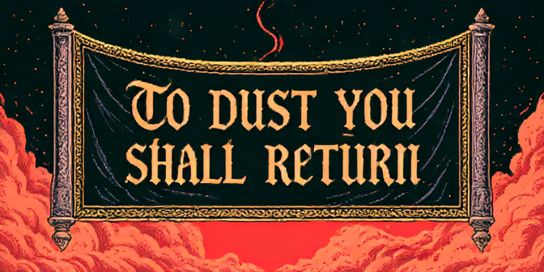
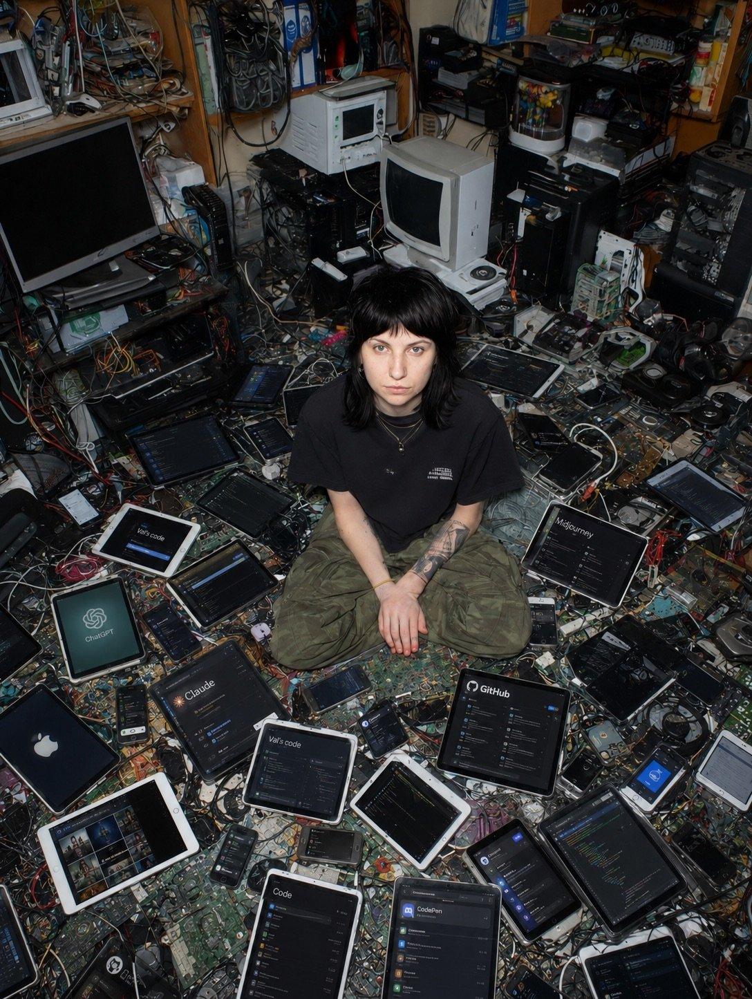
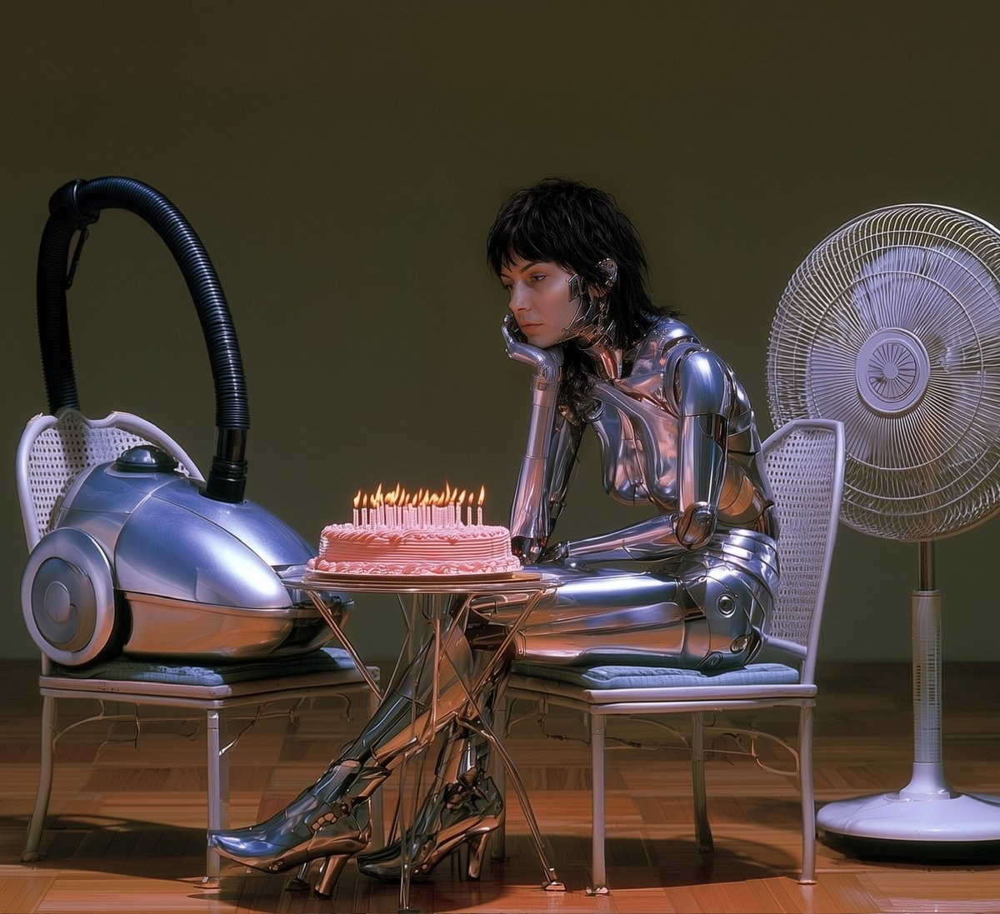

Art
Explorations in municipal archives, synthetic identity, and digital faith.
Synthetic photography · Worldbuilding · Neocities
New Mercy
A synthetic photographic archive documenting the municipal record of a fictional Rust Belt town.

The premise
Rather than generating fantastical surrealism, New Mercy explores vernacular, municipal memory: church pageants, laundromats, city councils, and local gatherings cataloged across decades.
The archive
Every photograph is treated as an artifact—assigned accession numbers, provenance, and catalog metadata under rigorous historical and aesthetic craft constraints.
NM-0001 → 0074and growing municipal holdings in the archive.
Visit New Mercy →Net art · Interactive shrine · Neocities & Val Town
Cyborg Cathedral
A cyber-gothic web shrine featuring an interactive automated priest and live confessional.

The architecture
A hand-written HTML/CSS sanctuary tied to a Val Town serverless backend. Because Neocities restricts direct external fetch requests, client-side liturgy and prayer calls route through JSONP.
The experience
Explores technological spiritualism through sacred texts, candle lighting, digital grotesques, and direct automated pastoral dialogue.
visitor → confession → JSONP bridge → priest response
Generative likeness · Ongoing series
AI Self-Portraits
Interrogating mechanical alienation, synthetic identity, and the transition into autonomous systems.


The inquiry
A continuous series using trained likeness models and prompt engineering to process the displacement of physical craftsmanship in film toward software architecture, AI collaboration, and digital embodiment.